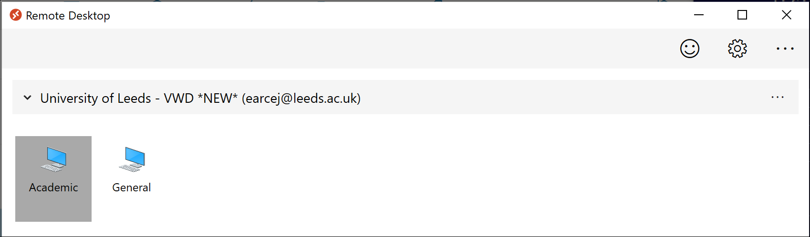

Access to software for GIS exercises
Last Modified: 05 Nov 20, 12:50:32
These instructions only apply to students and staff at the University of Leeds.
Important
Please be aware that it is essential for this module that you have access to particular GIS software - QGIS.
The full instructions are below. Make sure that you have followed these instructions as soon as possible and confirmed that you have access to the software. You will need to start using QGIS in the class in week 7, and will not be able to progress with the exercises without it.
If you have problems installing or accessing QGIS for any reason please contact me immediately so that I can help you - c.e.gordon@leeds.ac.uk
Installing QGIS on your own computer
This is the preferred method of using QGIS. If at all possible you should install it on your own computer as the version in the Virtual Windows Desktop is rather out of date. Instructions for using the Virtual Windows Desktop follow this section just in case you do need to use it.
QGIS is Open Source Software which can be downloaded for Windows, Mac and Linux and is freely available from the QGIS web page
Which version?
QGIS maintains a Long term release (LTR) version as well as the latest version.
At the moment the latest is version 3.16.0 and the long term release is version 3.10.11.
I would advise that you install the latest version, but you can complete all of the work for this module using the LTR and that is the more stable version. So either are fine.
- Go to the QGIS Download page and go to the section for your operating system (Windows, macOS or Linux).
- If you are on Windows
- download one of the
Standalone Installerversions rather than the Network Installer. - If your computer is Windows 10 you should download the 64 bit version.
- download one of the
Install the appropriate version following the usual method for your operating system, then make sure that you start QGIS to check that it works. If the installation is successful you should be able to see something like the screen below.

Let me know if it does or doesn’t work
Please email me, Clare Gordon when you have successfully opened QGIS. Also email me if you can’t get it to work.
Once you have QGIS working you are set up and ready for the first class. You don’t need to look at or follow the next set of instructions unless you are unable to install QGIS on your own computer.
Using QGIS on the Virtual Windows Desktop
From April 2020 it is possible to log in to a Virtual Windows Desktop to use QGIS. The Virtual Desktop will run on Windows, Mac and Linux. You need to install a client on your machine for the best access though it is apparently possible to run it in a web browser. Note that QGIS may not necessarily work via a web browser so the desktop client is preferred.
Note that the version of QGIS on the VWD is out of date, version 3.6 rather than a minimum of 3.10. Some plugins will not install or run, which will have an effect on completing the exercises for this module.
If you are unable to install the software for some reason, this is the best way to access QGIS.
Please make sure that you read all of the information in the IT knowledge base article about the Virtual Windows Desktop before you go ahead with this:
Direct link to information about downloading and installing the VWD
The important things to note are that
- capacity is limited, so if you can install QGIS on your own computer using the instructions above, please do so.
- again, capacity is limited, so if you do access QGIS by this route, make sure that you log off the Virtual Desktop when you have finished with it.
- GIS can very slowly in the Virtual Desktop if your data is on your M: drive. To get around this, copy your data to the Desktop, work on it, then copy it back to either your M: drive, or OneDrive. Data on the Desktop is deleted when you log out of the Virtual Desktop, or are timed out.
If you copy your data to the Virtual Desktop it is essential that you remember to then copy it back to either your M: drive or OneDrive before you log out. If you don’t, you will lose the work that you have been doing.
I will try to remind you of this at regular intervals during the exercises.
When you have installed the virtual desktop client and opened it you should have an icon showing a computer with Academic written underneath.

- Click on the icon to open the actual desktop. Be patient as it is a bit slow.
- You’ll be asked to log in with your usual University username and password.
- Once it has loaded your screen will be filled by a new desktop (your usual one is still there in the background). You’ll need to double-click on an icon labelled
AppsAnywhere Portalwhich opens a list of software - Look for
QGISand click onLaunch
Hopefully QGIS will open, but again, it could be rather slow.
Getting help with installation
If you have problems you will need to contact the IT helpdesk - check you are logged on to Minerva then go to IT Services and log either an issue or a request.
For an issue or problem go to
Something broken?and fill in the formFor a general request go to
Request SomethingthenLog a general Requestand fill in the form.